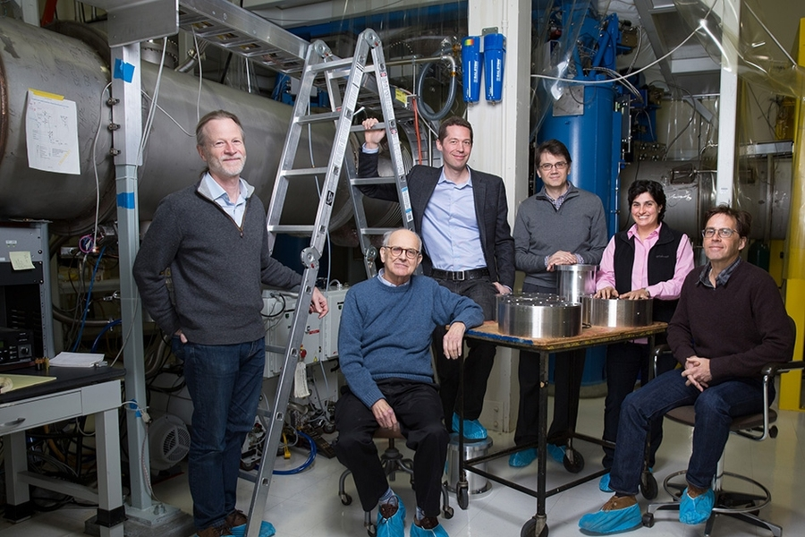
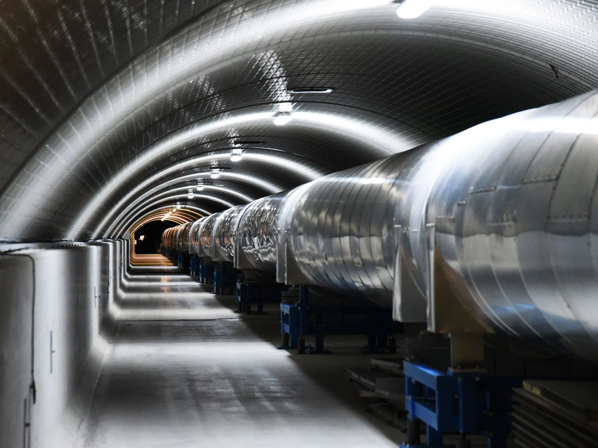
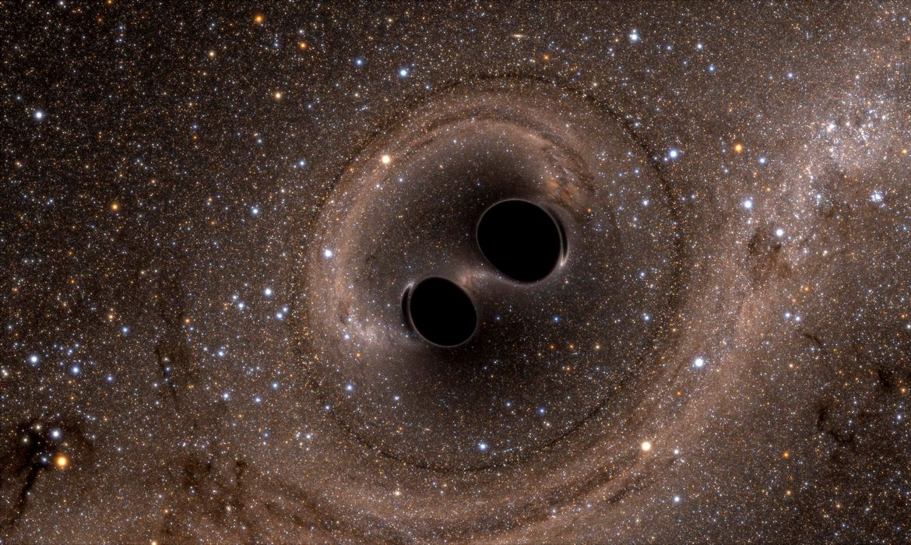

RESUMO DA BIOGRAFIA DE
NERGIS MAVALVALA
Data de nascimento
1968 (54-55 anos)
Lahore , Paquistão
Nacionalidade
paquistanesa, americana
Área de Atividade
Astrofísica, Física Quântica
Conhecida por
Ondas gravitacionais interferométricas, Medição quântica
Nergis Mavalvala
Astrofísica paquistanesa-americana
Por João Pedro e Leonardo Antônio
Biografia de Nergis Mavalvala
Nergis Mavalvala: Explorando o Cosmos através da Ciência
Nergis Mavalvala, nascida em 1968, é uma distinta física paquistanesa-americana renomada por suas significativas contribuições no campo da astrofísica. Sua jornada desde humildes origens até se tornar uma cientista pioneira deixou uma marca indelével em nossa compreensão do cosmos.
Primeiros Anos e Educação:
Nascida em Lahore, Paquistão, Mavalvala mostrou uma notável aptidão para matemática e ciências desde tenra idade. Ela prosseguiu com sua educação superior no Instituto de Tecnologia de Massachusetts (MIT), onde mergulhou no fascinante mundo da física. Gradualmente, sua paixão por entender as complexidades do universo cresceu, levando-a a se especializar no campo da astrofísica.
Astrofísica e Colaboração LIGO
O trabalho mais notável de Mavalvala gira em torno de seu envolvimento na Colaboração do Observatório de Ondas Gravitacionais por Interferômetro a Laser (LIGO). O LIGO é um projeto inovador projetado para detectar ondas gravitacionais, ondulações no tecido do espaço-tempo causadas por eventos cósmicos cataclísmicos, como a colisão de buracos negros massivos.
Suas contribuições para o LIGO foram nada menos que extraordinárias. Ela desempenhou um papel fundamental no desenvolvimento de tecnologias ópticas avançadas cruciais para os detectores sensíveis do LIGO. Em 2016, o LIGO fez história ao detectar com sucesso as ondas gravitacionais pela primeira vez, confirmando uma previsão feita por Albert Einstein um século antes. Esta descoberta monumental abriu uma maneira totalmente nova de observar o universo e proporcionou insights cruciais sobre fenômenos como fusões de buracos negros.
Reconhecimento e Conquistas
O trabalho inovador de Nergis Mavalvala tem recebido reconhecimento generalizado e inúmeras honras. Ela recebeu prêmios e honrarias prestigiosos, destacando suas contribuições excepcionais para a ciência e astrofísica. Suas realizações não apenas avançaram nossa compreensão do cosmos, mas também inspiraram inúmeras mentes jovens, especialmente mulheres, a seguir carreiras em ciência e tecnologia.
Principais Trabalhos

Foto: Bryce Vickmark
Descoberta de Ondas Gravitacionais
Mavalvala foi fundamental na detecção histórica das ondas gravitacionais, confirmando a teoria de Einstein.

Foto: Caltech/MIT/LIGO Lab
Contribuições à Tecnologia LIGO
Desenvolveu tecnologias ópticas avançadas para os detectores sensíveis do LIGO.

Foto: EFE/UNIVERSIDADE NACIONAL AUSTRALIANA/SXS
Pesquisa de Buracos Negros
Estudou fusões de buracos negros e suas implicações para a compreensão do universo.
- 2022, Orador de formatura de Wellesley em 2022
- 2017, Mavalvala ganhou o primeiro Lahore Technology Award lançado pela Information Technology University
- Em 2017, a Carnegie Corporation de Nova York homenageou Mavalvala como um dos ganhadores do prêmio Great Immigrants. Os prêmios vão para "cidadãos naturalizados que fizeram contribuições notáveis para o progresso da sociedade americana" .
- 2016, co-recebedor do Prêmio Gruber em Cosmologia
- 2016, co-recebedor do Prêmio Especial Breakthrough em Física Fundamental, como parte da equipe LIGO
- 2014, NOGLSTP reconheceu Mavalvala como o Cientista LGBTQ do Ano .
- 2014, Ótica Fellow
- 2013, Joseph F. Keithley Award for Advances in Measurement Science pela American Physical Society
- 2010, MacArthur Fellow
- 2010, American Physical Society Fellow
- 2007, prêmio Edgerton pela realização do corpo docente no Instituto de Tecnologia de Massachusetts
- 2005, Sloan Research Fellowship
- 1990, Prêmio Phyllis Fleming de Excelência em Física
Referências
- Mavalvala, N. Wikipedia. Disponível em: https://en.wikipedia.org/wiki/Nergis_Mavalvala. Acesso em: 18 de Agosto de 2023.
- MIT Physics Department. Faculty - Nergis Mavalvala. Disponível em: https://physics.mit.edu/faculty/nergis-mavalvala/. Acesso em: 18 de Agosto de 2023.
- I Am A Scientist. Nergis Mavalvala. Disponível em: https://www.iamascientist.info/nergis-mavalvala. Acesso em: 18 de Agosto de 2023.
- Yale University. Honorary Degrees 2021 - Nergis Mavalvala. Disponível em: https://yale2021.yale.edu/honorary-degrees/nergis-mavalvala. Acesso em: 18 de Agosto de 2023.
- MIT Kavli Institute for Astrophysics and Space Research. Nergis Mavalvala. Disponível em: https://space.mit.edu/people/mavalvala-nergis/. Acesso em: 18 de Agosto de 2023.